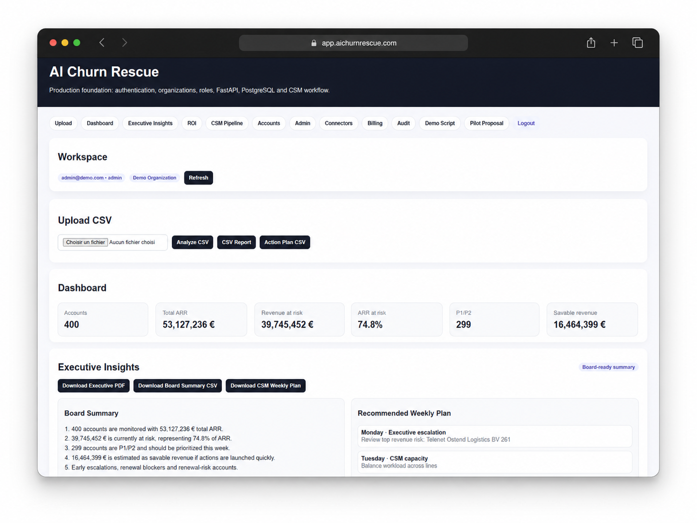
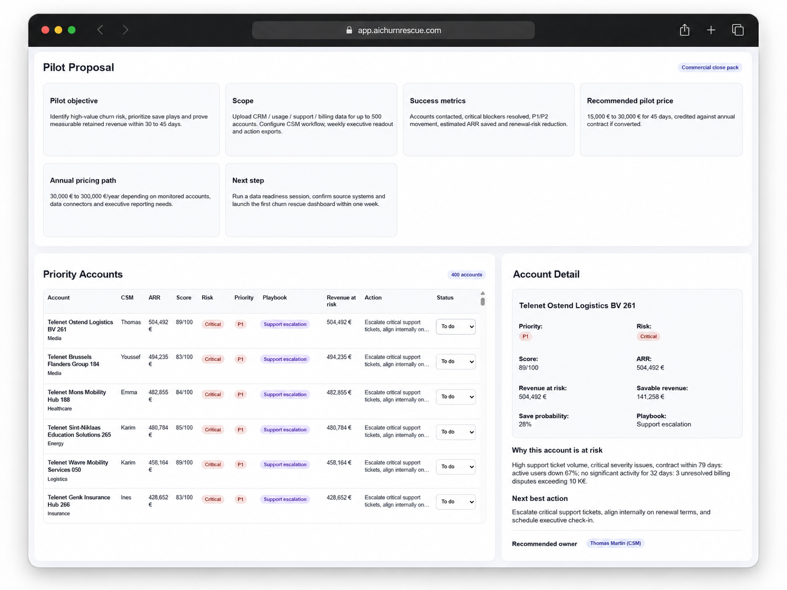
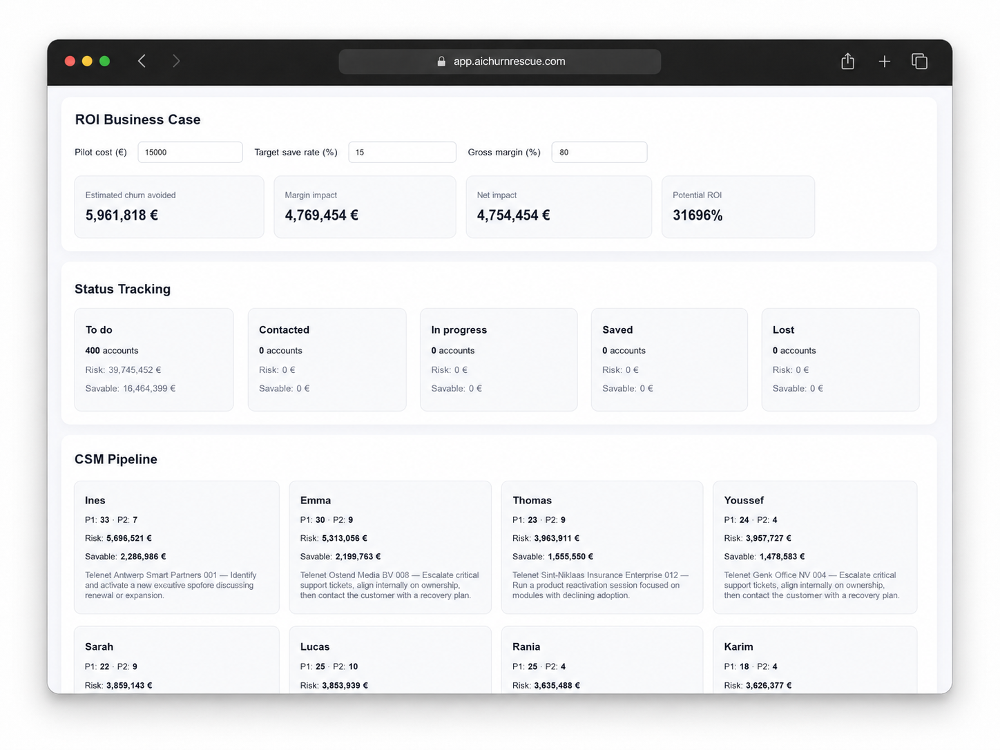
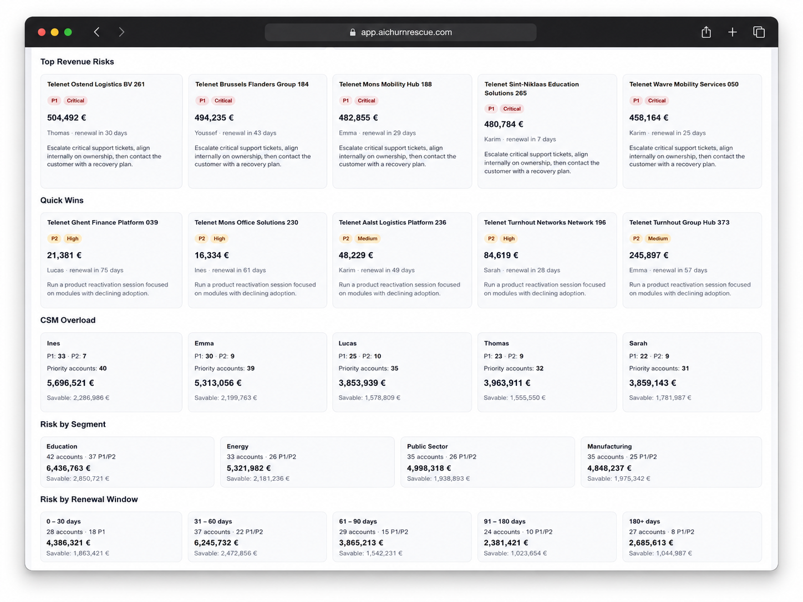
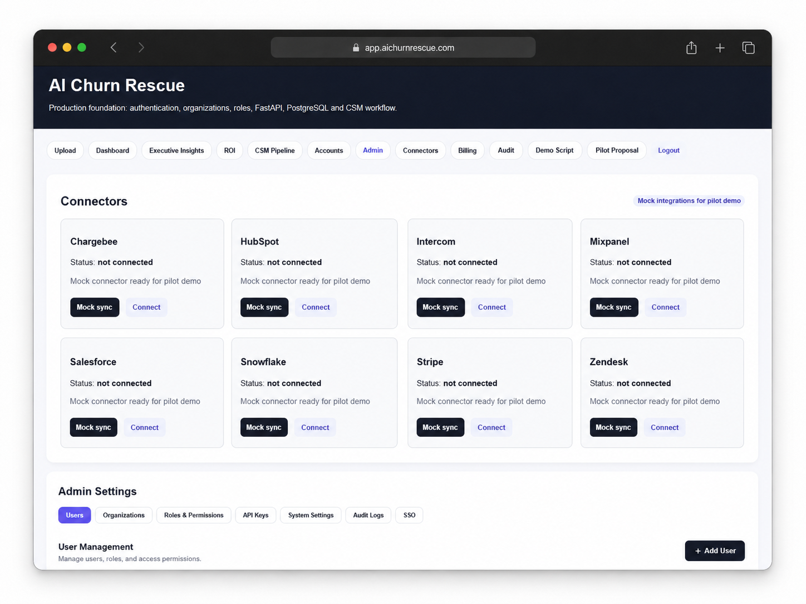

Signals are fragmented
CRM, support, billing and usage data live in different tools.
Customer retention intelligence for B2B teams
AI Churn Rescue connects CRM, support and billing signals to identify at-risk customers, quantify revenue exposure and recommend the next best CSM action.
For B2B SaaS, telecom, subscription businesses and customer success teams.
Problem
Customer risk usually appears across multiple systems: support tickets, CRM notes, payment delays, renewal timing and declining usage. Teams react too late because no single view connects these signals to revenue exposure.
CRM, support, billing and usage data live in different tools.
Teams need to prioritize the highest revenue at risk.
Executives need a simple view of ARR at risk and rescue actions.
Solution
AI Churn Rescue turns customer signals into a prioritized rescue pipeline: risk score, revenue at risk, risk explanation, next best action, CSM notes and executive-ready PDF reports.
How it works
Use CSV or connect CRM, support and billing systems.
Analyze renewal, support, sentiment, payment and usage signals.
Rank P1/P2 accounts by revenue at risk.
Export reports and weekly action plans.
Connectors
The strongest churn predictions combine who the customer is, what they experience and what revenue is at risk.
Account, owner, industry, ARR, lifecycle, opportunities and renewal context.
CRM contextTickets, chat signals, tags, urgent issues, sentiment and support blockers.
Support intelligenceSubscriptions, failed payments, dunning, invoices and cancellation signals.
Billing riskScreenshots
Real product views from AI Churn Rescue: dashboard, executive insights, connectors, ROI and customer rescue workflow.

Monitor accounts, ARR, revenue at risk, P1/P2 priorities and board-ready executive insights.

Identify top revenue risks, quick wins, CSM overload, risky segments and renewal-window exposure.

Review priority accounts, account-level risk drivers, recommended owner and next best action.

Show estimated churn avoided, margin impact, potential ROI, status tracking and CSM workload.

Demonstrate connector readiness for HubSpot, Salesforce, Zendesk, Stripe, Chargebee and admin controls.
ROI example
If a company has €40M in revenue at risk and the pilot helps save even 5%–15%, the financial impact can justify the pilot and annual license.
Pilot offer
No long-term commitment. Use real customer data to prove whether churn risk can be detected and prioritized.
Pricing
30-day pilot for validating value.
Private internal use with installation and training.
CRM + support + billing connector implementation.
Demo video
Record this with Loom, Zoom, Canva, CapCut, OBS or any screen recorder.
Data checklist
Account name, ARR/MRR, owner, industry, plan, renewal date.
Tickets, chat history, priority, tags, status, ticket age and sentiment.
Subscription status, invoices, failed payments, dunning and cancellation status.
FAQ
For now, AI Churn Rescue is best sold as a paid pilot, internal license or enterprise connector package.
Yes. Zendesk can provide support pressure, tickets, tags, urgency, sentiment and cancellation signals.
No. A pilot can start with CSV or one connector. The strongest results come from CRM + support + billing together.
No. The 30-day Proof of Value has no required long-term commitment.
Book a Demo
Book a 20-minute demo or start a paid Proof of Value with your customer data.